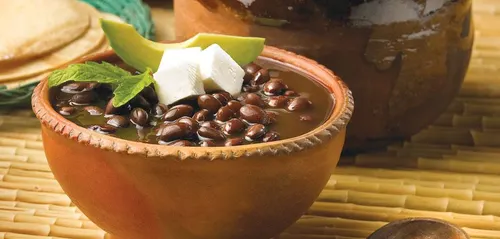

Saborea el auténtico Mole Chiapaneco
En nuestro restaurante preparamos cada platillo con recetas tradicionales e ingredientes frescos, para llevarte una experiencia llena de sabor y tradición en cada bocado. Descubre por qué somos el lugar favorito de quienes buscan la auténtica comida chiapaneca.
Lo nuevo

Sopa de Pan

Chipilín con Bolita

Estofado de Pollo
Comida Chiapaneca
Nuestra cocina rescata las raíces de Chiapas: ingredientes de la tierra, especias locales y recetas que han pasado de generación en generación. Cada platillo es una forma de compartir nuestra cultura y tradición contigo.
